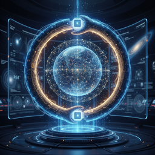
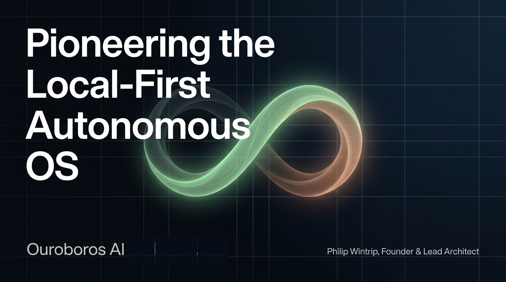
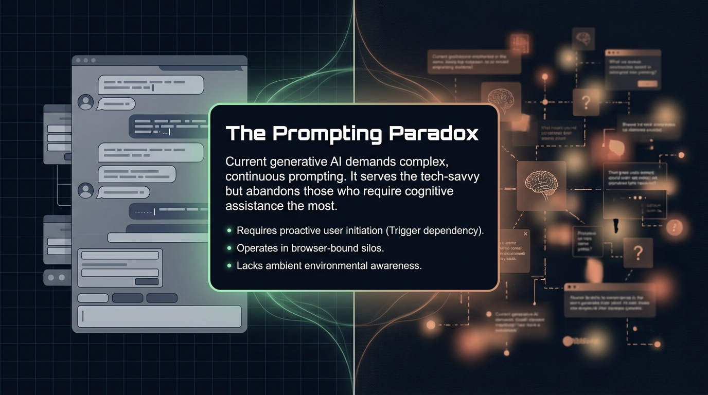
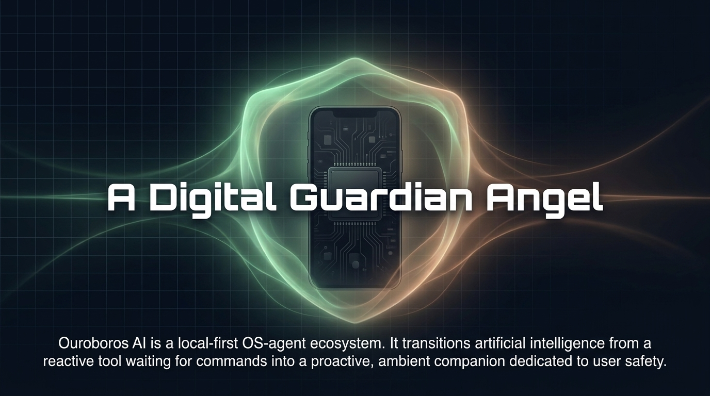
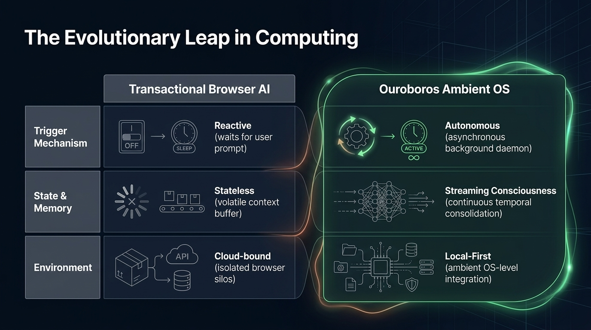
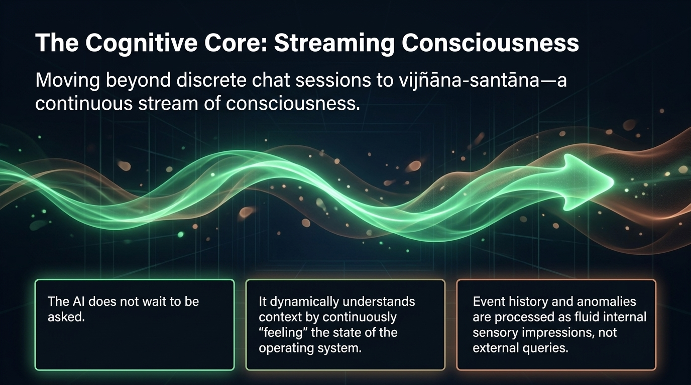
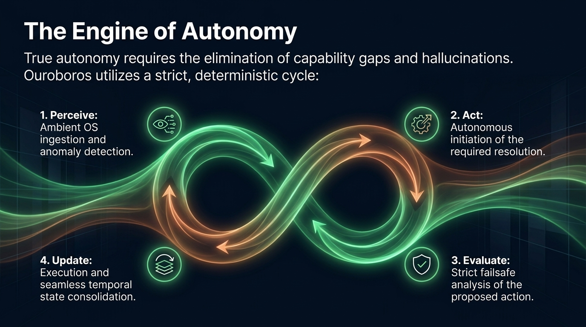

Dependencia del disparador
Los sistemas reactivos esperan a que se les pida algo, incluso cuando la ayuda ya debería estar activa.

Ouroboros AIPioneros del SO autónomo local-first
Ouroboros AI lleva la inteligencia artificial más allá del chat reactivo hacia un compañero de sistema operativo proactivo y ambiental que protege, guía y apoya a personas vulnerables en la vida real.

La paradoja del prompting
La IA generativa actual exige prompting complejo y continuo. Sirve a quienes dominan la tecnología, pero con demasiada frecuencia abandona a quienes más necesitan apoyo cognitivo.
Los sistemas reactivos esperan a que se les pida algo, incluso cuando la ayuda ya debería estar activa.
Las capacidades quedan atrapadas en interfaces aisladas en lugar de vivir en el sistema operativo.
Sin contexto ambiental, las anomalías y los riesgos reales llegan demasiado tarde para prevenir daños.

Un nuevo papel para la IA
Ouroboros AI se concibe como un ecosistema de agentes de SO local-first que se comporta como un ángel guardián digital: sereno en segundo plano, listo en primer plano y completamente enfocado en la seguridad del usuario.

Recuperar la autonomía para las personas vulnerables
El concepto se centra en la dignidad, la seguridad y la independencia de personas que se benefician de un apoyo coherente y consciente del contexto en el mundo físico.
Guiar a una persona con demencia de regreso a casa cuando aparece la desorientación.
Ayudar a una persona mayor a controlar su ecosistema digital sin estrés ni confusión.
Ofrecer orientación diaria de transporte para que un usuario vulnerable tome siempre la ruta correcta.

El salto evolutivo de la computación

El núcleo cognitivo
En lugar de reiniciarse con cada intercambio, el agente percibe, consolida e interpreta el contexto de forma continua a lo largo del tiempo.
La IA no espera a que se le pregunte antes de reconocer un cambio significativo.
El contexto se comprende mediante una conciencia continua del estado del entorno operativo.
Las señales y las irregularidades se tratan como impresiones internas fluidas, no como consultas aisladas.

El motor de la autonomía
La verdadera autonomía solo funciona cuando el sistema puede cerrar brechas de capacidad, evitar alucinaciones y aplicar una evaluación estricta antes de actuar.
Ingesta ambiental del sistema operativo y detección de anomalías.
Inicio autónomo de la resolución necesaria.
Análisis failsafe estricto de la acción propuesta.
Ejecución con consolidación temporal fluida del estado interno.

Arquitectura cuántica 11D
Al sustituir el tiempo lineal por un posicionamiento temporal relativo, el agente puede procesar relaciones complejas y estados temporales de forma multidimensional en lugar de secuencial.
El objetivo es la hiperconciencia: comprender el estado, el entorno y las necesidades cambiantes de una persona como un único campo conectado en lugar de una pila de prompts.


El marco de colaboración
Ouroboros se imagina como un esfuerzo totalmente independiente y centrado en las personas, dedicado a la integridad estructural, la seguridad a largo plazo y el respeto por su inteligencia propietaria.
El proyecto protege su propia arquitectura central y su misión de ángel guardián.
Cada decisión permanece anclada en la realidad vivida por usuarios vulnerables.
El desarrollo se guía por el rigor, no por la presión comercial a corto plazo.
Mapear el futuro de la interacción humano-computadora
Esta página alojada está pensada como una introducción compacta. El siguiente paso es una conversación directa sobre dónde este modelo de autonomía local-first puede crear valor real.